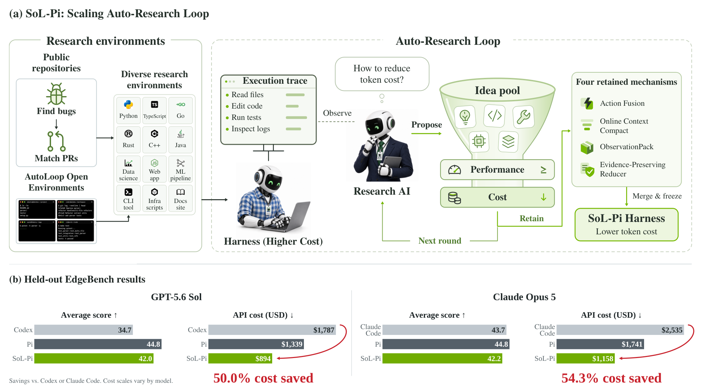
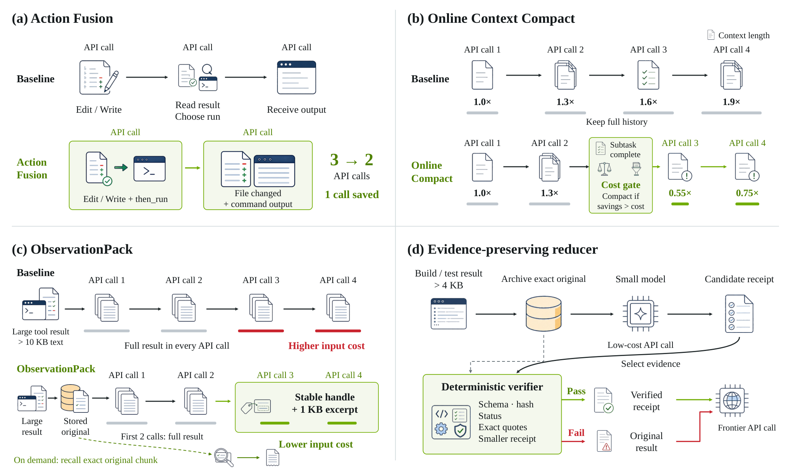

One evaluation runs coding-agent harnesses on IMO 2026 problems, with each solution required to be formalized and verified in Lean 4.
Abstract
As coding agents move from supervised code completion to unattended, around-the-clock exploration, their work expands from isolated predictions into long trajectories of reasoning, tool use, and feedback. Token efficiency therefore becomes important for scaling recursive self-improvement. We take an RSI-inspired approach at the harness layer, scaling auto-research loops across increasingly numerous and diverse environments for harness rollouts. At this scale, the process yields reusable improvements that transfer beyond their development setting, moving automated harness discovery toward production-level outcomes. Four mechanisms survive selection and form SoL-Pi, spanning action execution, context compaction, observation handling, and delegated reading. On the 51-task EdgeBench evaluation, SoL-Pi achieves performance comparable to Pi across GPT-5.6 Sol and Opus 5 while reducing recorded token traffic by 44.7-49.0% and API cost by about one third. In other words, estimated hourly savings are \$8.75-\$13.50 relative to native Codex and Claude Code harnesses, and \$4.36-\$5.71 relative to Pi.
Problem
Long-horizon coding agents consume large numbers of tokens, so token efficiency matters for scaling unattended exploration and recursive self-improvement. Optimizing the agent harness by hand is hard because tool use, context management and delegation are tightly coupled.
Approach
An AI research agent inspects execution traces from a base harness (Pi), proposes candidate changes, and tests them across many development environments. Candidates must stay within fixed capability tolerances and improve at least one efficiency metric. Four retained mechanisms (Action Fusion, Online Context Compact, Evidence-Preserving Reducer, ObservationPack) are combined into SoL-Pi. SoL-Pi is evaluated on EdgeBench, Terminal-Bench 4, a kernel-optimization benchmark, and IMO 2026, where solutions must be formalized and verified in Lean 4.

Figure 1 : SoL-Pi discovers a more token-efficient harness through automated research. (a) SoL-Pi: Scaling Auto-Research Loop. Prepared research environments supply tasks to an AI running the base harness. A research AI inspects its execution traces, proposes candidate changes, and filters the idea pool through capability and efficiency gates. Four retained mechanisms are integrated and refined in

Figure 4 : The four retained mechanisms act at different points in the agent–environment loop. (a) Action Fusion combines a mutation and its follow-up command into one request, reducing API calls from three to two. (b) Online Context Compact evaluates compaction at subtask completion and applies it only when projected savings exceed the rewrite cost. (c) ObservationPack sends large results in full
Results
On the 51 public EdgeBench tasks, the full SoL-Pi stack cuts token traffic by 44.7–49.0% and API cost by about one third relative to Pi, at comparable scores across GPT-5.6 Sol and Opus 5. On IMO 2026, SoL-Pi produced 3 of 6 Lean-verified solutions, matching Pi at lower cost, while Codex produced 5.
Harness
TB4 Solved (/63)
TB4 Cost ($)
IMO Pass (/6)
IMO Cost ($)
Cost / Passed ($)
Codex
18
272.35
5
114.47
22.89
Pi
18
286.45
3
75.95
25.32
SoL-Pi
15
211.12
3
62.69
20.90
Terminal-Bench 4 and IMO 2026 (Lean 4-verified) results with GPT-5.6 Sol